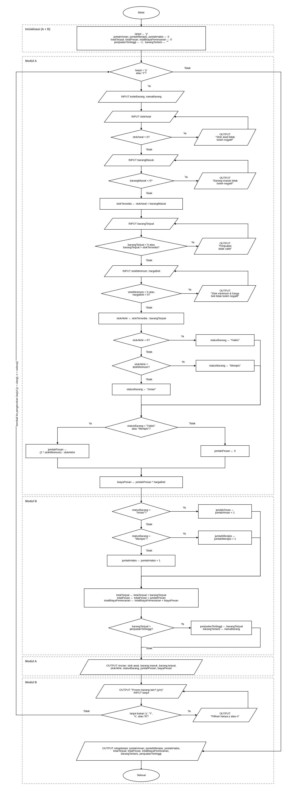

Studi Kasus 06 · Kelompok 6
Program Terintegrasi
Bahasa pemrograman: C++
Proses Integrasi
Program terintegrasi (src/program_final.cpp) dibuat dengan menjadikan Modul A (modul_a.cpp) sebagai kerangka, lalu menyisipkan bagian rekapitulasi dari Modul B (modul_b.cpp) di tiga tempat dalam satu perulangan yang sama.
- Variabel rekapitulasi Modul B (jumlahAman, jumlahMenipis, jumlahHabis, totalTerjual, totalPesan, totalBiayaPemesanan, penjualanTertinggi, barangTerlaris) dideklarasikan di luar perulangan dan diisi nilai awal, supaya nilainya bertahan sampai semua barang diproses. Karena program tidak memakai array, rekapitulasi disimpan pada variabel penampung ini.
- Pembaruan rekapitulasi dilakukan di dalam perulangan, tepat setelah Modul A selesai menghitung
biayaPesan. Modul B memakai hasil Modul A (statusBarang,barangTerjual,jumlahPesan,biayaPesan,namaBarang). - Tampilan rekapitulasi diletakkan setelah perulangan selesai, sebelum pesan "Program selesai".
Penyesuaian pada Modul B:
- Input manual status barang, barang terjual, jumlah pesan, dan biaya pemesanan dihapus, karena nilai-nilai itu sudah dihitung oleh Modul A. Tanpa penyesuaian ini, petugas harus mengetik hasil perhitungan dua kali.
- Validasi pilihan lanjut dari Modul B (hanya menerima y atau n) dipakai menggantikan pertanyaan lanjut milik Modul A.
- Nama variabel kedua modul sudah sama (
namaBarang,statusBarang,barangTerjual,jumlahPesan,biayaPesan), sehingga tidak perlu diganti.
Pseudocode Final
ALGORITMA ProgramTerintegrasi_EvaluasiPersediaan
DEKLARASI
kodeBarang, namaBarang, statusBarang, barangTerlaris : string
stokAwal, barangMasuk, barangTerjual, stokMinimum : integer
hargaBeli, stokTersedia, stokAkhir : integer
jumlahPesan, biayaPesan : integer
jumlahAman, jumlahMenipis, jumlahHabis : integer
totalTerjual, totalPesan, penjualanTertinggi : integer
totalBiayaPemesanan : long integer
lanjut : char
DESKRIPSI
lanjut ← 'y'
jumlahAman ← 0 ; jumlahMenipis ← 0 ; jumlahHabis ← 0
totalTerjual ← 0 ; totalPesan ← 0 ; totalBiayaPemesanan ← 0
penjualanTertinggi ← -1 ; barangTerlaris ← ""
WHILE lanjut = 'y' OR lanjut = 'Y' DO
// ----- MODUL A: input dan validasi -----
INPUT kodeBarang, namaBarang
REPEAT
INPUT stokAwal
IF stokAwal < 0 THEN OUTPUT "Stok awal tidak boleh negatif"
UNTIL stokAwal >= 0
REPEAT
INPUT barangMasuk
IF barangMasuk < 0 THEN OUTPUT "Barang masuk tidak boleh negatif"
UNTIL barangMasuk >= 0
stokTersedia ← stokAwal + barangMasuk
REPEAT
INPUT barangTerjual
IF barangTerjual < 0 OR barangTerjual > stokTersedia THEN
OUTPUT "Penjualan tidak valid"
END IF
UNTIL barangTerjual >= 0 AND barangTerjual <= stokTersedia
REPEAT
INPUT stokMinimum, hargaBeli
IF stokMinimum < 0 OR hargaBeli < 0 THEN
OUTPUT "Stok minimum dan harga beli tidak boleh negatif"
END IF
UNTIL stokMinimum >= 0 AND hargaBeli >= 0
// ----- MODUL A: perhitungan -----
stokAkhir ← stokTersedia - barangTerjual
IF stokAkhir = 0 THEN
statusBarang ← "Habis"
ELSE IF stokAkhir < stokMinimum THEN
statusBarang ← "Menipis"
ELSE
statusBarang ← "Aman"
END IF
IF statusBarang = "Habis" OR statusBarang = "Menipis" THEN
jumlahPesan ← (2 * stokMinimum) - stokAkhir
ELSE
jumlahPesan ← 0
END IF
biayaPesan ← jumlahPesan * hargaBeli
// ----- MODUL B: perbarui rekapitulasi -----
IF statusBarang = "Aman" THEN
jumlahAman ← jumlahAman + 1
ELSE IF statusBarang = "Menipis" THEN
jumlahMenipis ← jumlahMenipis + 1
ELSE
jumlahHabis ← jumlahHabis + 1
END IF
totalTerjual ← totalTerjual + barangTerjual
totalPesan ← totalPesan + jumlahPesan
totalBiayaPemesanan ← totalBiayaPemesanan + biayaPesan
IF barangTerjual > penjualanTertinggi THEN
penjualanTertinggi ← barangTerjual
barangTerlaris ← namaBarang
END IF
// ----- MODUL A: tampilkan rincian -----
OUTPUT rincian barang, stokAkhir, statusBarang, jumlahPesan, biayaPesan
// ----- pilihan mengulang (hanya y atau n) -----
REPEAT
OUTPUT "Proses barang lain? (y/n)"
INPUT lanjut
IF lanjut BUKAN 'y', 'Y', 'n', atau 'N' THEN
OUTPUT "Pilihan hanya y atau n"
END IF
UNTIL lanjut = 'y' OR 'Y' OR 'n' OR 'N'
END WHILE
// ----- MODUL B: tampilkan rekapitulasi -----
OUTPUT jumlahAman, jumlahMenipis, jumlahHabis, totalTerjual, totalPesan,
totalBiayaPemesanan, barangTerlaris, penjualanTertinggi
SELESAIFlowchart Final

Klik gambar untuk melihat ukuran penuh. Kotak putus-putus menandai bagian Modul A, Modul B, dan inisialisasi.
Source Code Final
#include <iostream>
#include <string>
using namespace std;
int main() {
// ===== Variabel Modul A: proses tiap barang =====
string kodeBarang, namaBarang, statusBarang;
int stokAwal = 0, barangMasuk = 0, barangTerjual = 0;
int stokMinimum = 0, hargaBeli = 0, stokTersedia = 0;
int stokAkhir = 0, jumlahPesan = 0, biayaPesan = 0;
char lanjut = 'y';
// ===== Variabel Modul B: rekapitulasi (di luar perulangan, diisi 0) =====
int jumlahAman = 0;
int jumlahMenipis = 0;
int jumlahHabis = 0;
int totalTerjual = 0;
int totalPesan = 0;
long long totalBiayaPemesanan = 0;
int penjualanTertinggi = -1;
string barangTerlaris;
cout << "=== EVALUASI PERSEDIAAN BARANG (PROGRAM TERINTEGRASI) ===" << endl;
// Perulangan utama: proses barang selama petugas memilih lanjut
while (lanjut == 'y' || lanjut == 'Y') {
// ---------- MODUL A: input dan validasi ----------
cout << "\n--- Data Barang ---" << endl;
cout << "Kode barang : ";
getline(cin >> ws, kodeBarang);
cout << "Nama barang : ";
getline(cin >> ws, namaBarang);
// Validasi stok awal (tidak boleh negatif atau bukan angka)
do {
cout << "Stok awal : ";
if (!(cin >> stokAwal)) {
cin.clear();
cin.ignore(10000, '\n');
stokAwal = -1;
}
if (stokAwal < 0)
cout << " [!] Harus berupa angka dan tidak boleh negatif." << endl;
} while (stokAwal < 0);
// Validasi barang masuk
do {
cout << "Barang masuk: ";
if (!(cin >> barangMasuk)) {
cin.clear();
cin.ignore(10000, '\n');
barangMasuk = -1;
}
if (barangMasuk < 0)
cout << " [!] Harus berupa angka dan tidak boleh negatif." << endl;
} while (barangMasuk < 0);
// Stok yang tersedia untuk dijual
stokTersedia = stokAwal + barangMasuk;
// Validasi barang terjual (tidak boleh melebihi stok tersedia)
do {
cout << "Barang terjual (maks " << stokTersedia << "): ";
if (!(cin >> barangTerjual)) {
cin.clear();
cin.ignore(10000, '\n');
barangTerjual = -1;
}
if (barangTerjual < 0 || barangTerjual > stokTersedia)
cout << " [!] Penjualan tidak valid (0 sampai " << stokTersedia << ")." << endl;
} while (barangTerjual < 0 || barangTerjual > stokTersedia);
// Validasi stok minimum
do {
cout << "Stok minimum: ";
if (!(cin >> stokMinimum)) {
cin.clear();
cin.ignore(10000, '\n');
stokMinimum = -1;
}
if (stokMinimum < 0)
cout << " [!] Harus berupa angka dan tidak boleh negatif." << endl;
} while (stokMinimum < 0);
// Validasi harga beli
do {
cout << "Harga beli : Rp";
if (!(cin >> hargaBeli)) {
cin.clear();
cin.ignore(10000, '\n');
hargaBeli = -1;
}
if (hargaBeli < 0)
cout << " [!] Harus berupa angka dan tidak boleh negatif." << endl;
} while (hargaBeli < 0);
// ---------- MODUL A: perhitungan ----------
// Hitung stok akhir
stokAkhir = stokTersedia - barangTerjual;
// Tentukan status barang
if (stokAkhir == 0) {
statusBarang = "Habis";
} else if (stokAkhir < stokMinimum) {
statusBarang = "Menipis";
} else {
statusBarang = "Aman";
}
// Hitung jumlah pesan: sampai stok mencapai dua kali stok minimum
if (statusBarang == "Habis" || statusBarang == "Menipis") {
jumlahPesan = (2 * stokMinimum) - stokAkhir;
} else {
jumlahPesan = 0;
}
// Hitung biaya pemesanan
biayaPesan = jumlahPesan * hargaBeli;
// ---------- MODUL B: perbarui rekapitulasi ----------
// Rekap status
if (statusBarang == "Aman")
jumlahAman++;
else if (statusBarang == "Menipis")
jumlahMenipis++;
else
jumlahHabis++;
// Rekap total
totalTerjual += barangTerjual;
totalPesan += jumlahPesan;
totalBiayaPemesanan += biayaPesan;
// Cari barang dengan penjualan tertinggi
if (barangTerjual > penjualanTertinggi) {
penjualanTertinggi = barangTerjual;
barangTerlaris = namaBarang;
}
// ---------- MODUL A: tampilkan rincian ----------
cout << "\n--- Rincian Barang ---" << endl;
cout << "Kode / Nama : " << kodeBarang << " / " << namaBarang << endl;
cout << "Stok awal : " << stokAwal << endl;
cout << "Barang masuk : " << barangMasuk << endl;
cout << "Barang terjual : " << barangTerjual << endl;
cout << "Stok akhir : " << stokAkhir << endl;
cout << "Stok minimum : " << stokMinimum << endl;
cout << "Status : " << statusBarang << endl;
cout << "Jumlah dipesan : " << jumlahPesan << " unit" << endl;
cout << "Biaya pemesanan : Rp" << biayaPesan << endl;
// Pilihan mengulang atau mengakhiri (hanya menerima y atau n)
do {
cout << "\nProses barang lain? (y/n): ";
cin >> lanjut;
if (lanjut != 'y' && lanjut != 'Y' &&
lanjut != 'n' && lanjut != 'N') {
cout << "[!] Pilihan hanya y atau n." << endl;
}
} while (lanjut != 'y' && lanjut != 'Y' &&
lanjut != 'n' && lanjut != 'N');
}
// ---------- MODUL B: tampilkan rekapitulasi ----------
cout << "\n===== HASIL REKAPITULASI =====" << endl;
cout << "Jumlah barang aman : " << jumlahAman << endl;
cout << "Jumlah barang menipis : " << jumlahMenipis << endl;
cout << "Jumlah barang habis : " << jumlahHabis << endl;
cout << "Total unit terjual : " << totalTerjual << endl;
cout << "Total unit dipesan : " << totalPesan << endl;
cout << "Total biaya pemesanan : Rp" << totalBiayaPemesanan << endl;
cout << "Barang terlaris : " << barangTerlaris << endl;
cout << "Penjualan tertinggi : " << penjualanTertinggi << " unit" << endl;
cout << "\nProgram selesai." << endl;
return 0;
}Hasil Eksekusi
Tiga barang dan rekapitulasi

Validasi input

Tabel Pengujian
| No | Skenario | Data masukan | Hasil yang diharapkan | Hasil aktual | Status |
|---|---|---|---|---|---|
| 1 | Satu barang berstatus Menipis | Pulpen: awal 10, masuk 5, terjual 12, min 5, harga 2000; lanjut n | Aman 0, Menipis 1, Habis 0; terjual 12; dipesan 7; biaya Rp14000; terlaris Pulpen (12 unit) | Aman 0, Menipis 1, Habis 0; terjual 12; dipesan 7; biaya Rp14000; terlaris Pulpen (12 unit) | Berhasil |
| 2 | Tiga barang: Menipis, Aman, Habis | Pulpen (10,5,12,5,2000); Buku (20,10,5,5,1500); Penghapus (10,0,10,5,2000) | Aman 1, Menipis 1, Habis 1; terjual 27; dipesan 17; biaya Rp34000; terlaris Pulpen (12 unit) | Aman 1, Menipis 1, Habis 1; terjual 27; dipesan 17; biaya Rp34000; terlaris Pulpen (12 unit) | Berhasil |
| 3 | Semua barang Aman | Pensil (20,0,5,5,1000); Spidol (30,0,10,10,2000) | Aman 2; terjual 15; dipesan 0; biaya Rp0; terlaris Spidol (10 unit) | Aman 2; terjual 15; dipesan 0; biaya Rp0; terlaris Spidol (10 unit) | Berhasil |
| 4 | Batas: stok akhir = stok minimum | Awal 10, masuk 0, terjual 5, min 5, harga 2000 | Aman 1; dipesan 0; biaya Rp0 | Aman 1; dipesan 0; biaya Rp0 | Berhasil |
| 5 | Nilai nol | Awal 0, masuk 0, terjual 0, min 5, harga 3000 | Habis 1; terjual 0; dipesan 10; biaya Rp30000 | Habis 1; terjual 0; dipesan 10; biaya Rp30000; penjualan tertinggi 0 unit | Berhasil |
| 6 | Penjualan sama besar | Pertama (10,0,5,5,1000); Kedua (10,0,5,5,1000) | Aman 2; terjual 10; terlaris barang yang diinput lebih dulu (Pertama) | Aman 2; terjual 10; terlaris Pertama (5 unit) | Berhasil |
| 7 | Penjualan melebihi stok | Awal 10, masuk 5, terjual 16, lalu 15 | 16 ditolak dan diminta input ulang | Muncul pesan penjualan tidak valid (0 sampai 15); 15 diterima, status Habis, dipesan 10 | Berhasil |
| 8 | Input negatif | Stok awal -5, lalu 10 | -5 ditolak dan diminta input ulang | Muncul pesan harus berupa angka dan tidak boleh negatif; 10 diterima | Berhasil |
| 9 | Input bukan angka | Stok awal abc, lalu 10 | abc ditolak, program tidak berhenti | Muncul pesan harus berupa angka dan tidak boleh negatif; program tetap berjalan sampai selesai | Berhasil |
| 10 | Pilihan lanjut tidak valid | Jawaban q, lalu n | q ditolak, rekapitulasi tampil setelah n | Muncul pesan pilihan hanya y atau n; setelah n rekapitulasi tampil | Berhasil |
Trace Table Percabangan dan Perulangan
1. Trace table percabangan: status dan jumlah pesan
Pengecekan dilakukan dari atas ke bawah dan berhenti di syarat pertama yang benar.
| No | stokAkhir | stokMinimum | stokAkhir = 0? | stokAkhir < stokMinimum? | statusBarang | jumlahPesan |
|---|---|---|---|---|---|---|
| 1 | 3 | 5 | Tidak | Ya | Menipis | (2 x 5) - 3 = 7 |
| 2 | 25 | 5 | Tidak | Tidak | Aman | 0 |
| 3 | 0 | 5 | Ya | (tidak dicek) | Habis | (2 x 5) - 0 = 10 |
| 4 | 5 | 5 | Tidak | Tidak | Aman | 0 |
| 5 | 0 | 0 | Ya | (tidak dicek) | Habis | (2 x 0) - 0 = 0 |
2. Trace table perulangan utama (tiga barang)
Data: Pulpen (10, 5, 12, 5, 2000), Buku (20, 10, 5, 5, 1500), Penghapus (10, 0, 10, 5, 2000).
| Iterasi | namaBarang | barangTerjual | statusBarang | jumlahPesan | biayaPesan | jumlahAman | jumlahMenipis | jumlahHabis | totalTerjual | totalPesan | totalBiayaPemesanan | penjualanTertinggi | barangTerlaris | lanjut |
|---|---|---|---|---|---|---|---|---|---|---|---|---|---|---|
| Awal | - | - | - | - | - | 0 | 0 | 0 | 0 | 0 | 0 | -1 | "" | y |
| 1 | Pulpen | 12 | Menipis | 7 | 14000 | 0 | 1 | 0 | 12 | 7 | 14000 | 12 (12 > -1) | Pulpen | y |
| 2 | Buku | 5 | Aman | 0 | 0 | 1 | 1 | 0 | 17 | 7 | 14000 | 12 (5 > 12? Tidak) | Pulpen | y |
| 3 | Penghapus | 10 | Habis | 10 | 20000 | 1 | 1 | 1 | 27 | 17 | 34000 | 12 (10 > 12? Tidak) | Pulpen | n |
| Selesai | lanjut = n, perulangan berhenti dan rekapitulasi ditampilkan. | |||||||||||||
3. Trace table perulangan validasi barang terjual (stokTersedia = 15)
| Percobaan | Input | barangTerjual | barangTerjual < 0 atau > 15? | Tindakan |
|---|---|---|---|---|
| 1 | 99 | 99 | Ya | Tampil pesan penjualan tidak valid, ulangi |
| 2 | abc | -1 (input gagal dibaca) | Ya | Tampil pesan penjualan tidak valid, ulangi |
| 3 | 15 | 15 | Tidak | Perulangan berhenti, data diterima |
Daftar Kesalahan dan Perbaikan
| No | Kesalahan | Penyebab | Perbaikan |
|---|---|---|---|
| 1 | File modul_a.cpp berwarna merah dan kodenya terpotong | Proses menempel terganggu oleh mode timpa (OVR) di VS Code dan saran otomatis Copilot | Mode OVR dimatikan, isi file diganti dengan versi lengkap, lalu dikompilasi ulang |
| 2 | Git menampilkan "nothing to commit, working tree clean" padahal file sudah diisi | File belum disimpan (titik putih di tab VS Code) | File disimpan dengan Ctrl + S, lalu add dan commit diulang |
| 3 | Error "undefined reference to WinMain" saat kompilasi | File yang dikompilasi belum berisi fungsi main() karena belum tersimpan | File disimpan lalu dikompilasi ulang |
| 4 | Judul dan kartu ganda pada halaman Modul A | Isi ditempel di tengah baris placeholder, bukan menggantikan seluruh baris | Dirapikan dengan Find and Replace sehingga tiap bagian hanya muncul sekali |
| 5 | git add gagal: "pathspec did not match any files" | Terminal berada di folder src, bukan folder utama repository | Pindah ke folder utama dengan cd .. |
| 6 | Gambar flowchart tidak tampil di halaman | Nama file gambar berbeda dengan nama pada tag img | File diganti namanya agar sama dengan yang dipakai di HTML |
| 7 | Flowchart Modul A: arah panah ke Selesai terbalik, label Ya/Tidak dan kepala panah belum lengkap | Kesalahan penggambaran | Flowchart dikoreksi dan digambar ulang, lalu dicocokkan dengan pseudocode |
| 8 | Modul B meminta input manual status, jumlah pesan, dan biaya pemesanan | Modul B ditulis berdiri sendiri, belum memakai hasil Modul A | Input manual dihapus, Modul B memakai hasil perhitungan Modul A, dan variabel rekapitulasi diletakkan di luar perulangan |
| 9 | Keterbatasan: jawaban "yes" pada pertanyaan lanjut menjadikan huruf "es" terbaca sebagai kode barang berikutnya | Program hanya membaca satu karakter untuk pilihan lanjut | Belum diperbaiki dan dicatat sebagai keterbatasan. Perbaikan: membaca jawaban sebagai string dan memakai huruf pertamanya |